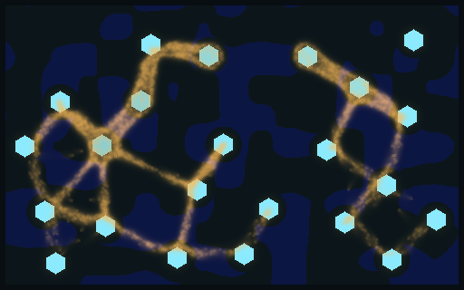
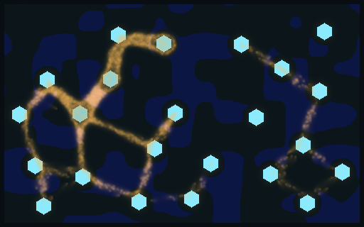
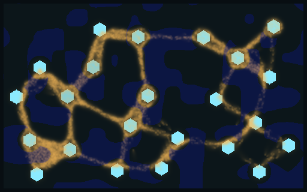
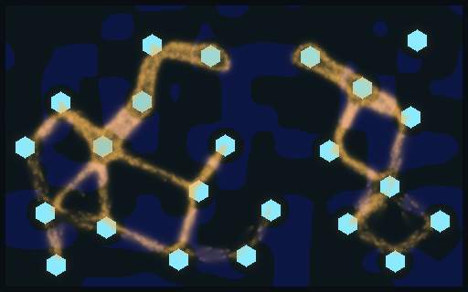
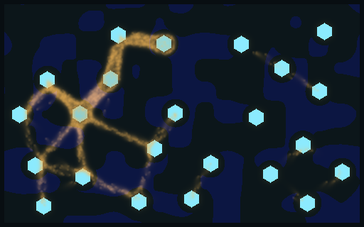
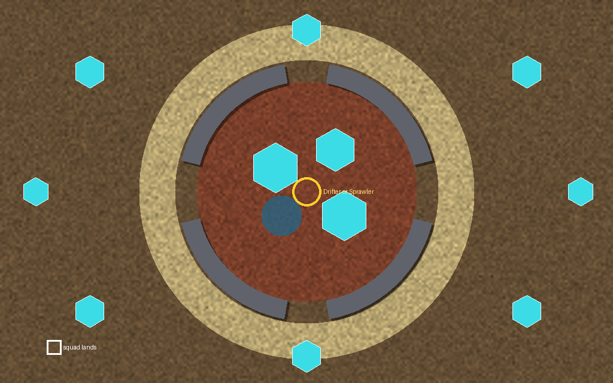
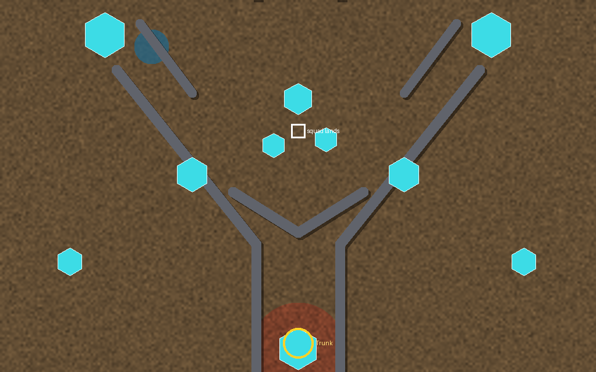
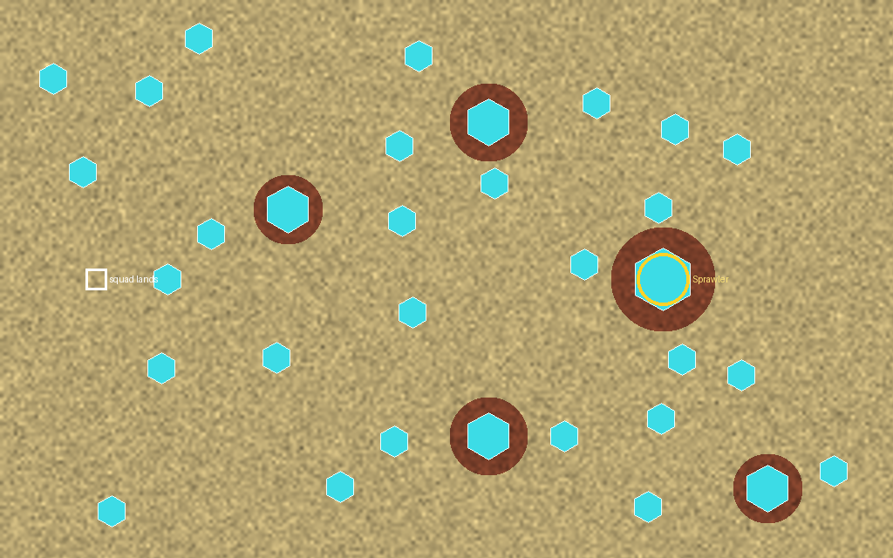
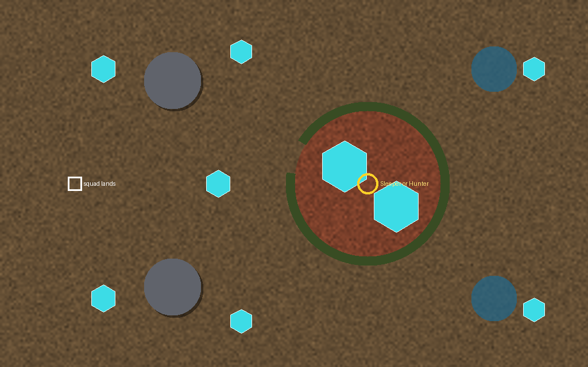
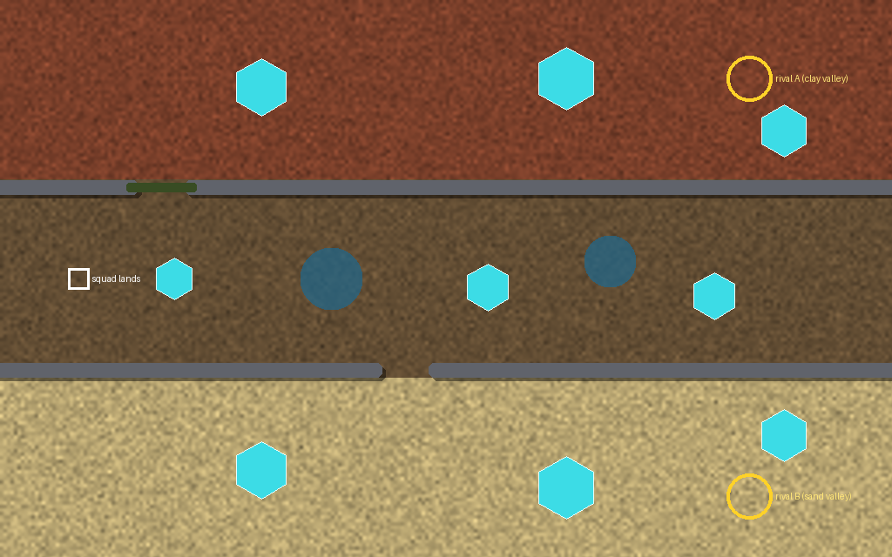

Which ground the mould actually feels, tested on paired seeds, and five flat maps built from that ground. Height is parked: you asked how much it changes the mould, and nothing had measured it.
Which ground the mould feels
Same world, same patch of ground (30% of the map, blue tint) in every picture, seed 4 at 60 s of growth. Only what the patch is changes. The counts are medians of 16 paired seeds against plain ground.

Plain (control). 7,165 alive; 10.8% of walkers on the patch.

Wet (step halved). 4,044 alive, smaller on 16 of 16 seeds. Walkers crowd onto it.

Sand (trail fades fast). 11,462 alive, bigger on 14 of 16. Walkers leave it (7.0% on it) and find crystals sooner.

Clay (trail lasts). Walkers gather on it (13.8%); eats less on 15 of 16.

Barren (no births, upkeep ×3). 3,603 alive, half size on 15 of 16.
Every kind changes the mould. Slow ground halves it, which also means a slope that slows would matter; flat wet ground gives that effect without height. Sand surprised me: it makes the mould spread faster, not hold ground worse. Sign tests, Holm over 16: all hold except barren's patch share and clay's size.
Five maps, flat
soilsandclayrockwatersoft rock (the mould chews through)crystalmould start
These are sketches of the map files. The next version is drawn by the game's own world look, with sand, clay and barren added to it.

The Rim
Drawn for
Turtle: hold the four gaps
Ground
Clay inside holds the mould at home; a rock ring lets it out only through gaps, onto a sand belt where it spreads fast.
Turned by
A Sporer, which flies over the ring

The Fork
Drawn for
Lure: bait one fork, harvest the other
Ground
Rock walls make a Y; the mould starts on clay at the stem; a pool slows one fork.
Turned by
A Hunter, which follows soldiers rather than bait

The Flats
Drawn for
Boom: out-harvest
Ground
Sand everywhere, so the mould spreads fast; only five clay islands hold it. Can a spread squad still harvest faster?
Turned by
A Trunk, which holds ground by thickness

The Nest
Drawn for
Rush: strike before it breaks out
Ground
A soft-rock ring round clay and 1,280 charge; one gap faces the squad. Left alone, it breaks out at full strength.
Turned by
A Sleeper, which sleeps through a strike

The Passes
Drawn for
Adapt: set two moulds on each other
Ground
The sand-valley rival is fast and comes through the open pass; the clay-valley rival is slow and dug in behind a soft-rock gate.
Turned by
A Converter, which grows by winning that border
How a map is kept
On each map, 16 paired seeds of the five player-AI styles plus idle and random: the best plan beats idle and random (sign test, Holm over the maps).
At least three different winners among the five maps.
The winner changes when the mould tier changes.
Waits on the Larder thread's map loader (in progress) and its game harness. Record: Reports/larder-maps-2026-11-11.md.